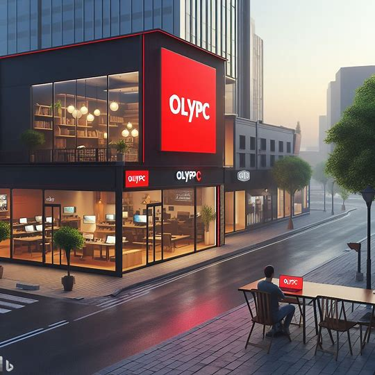
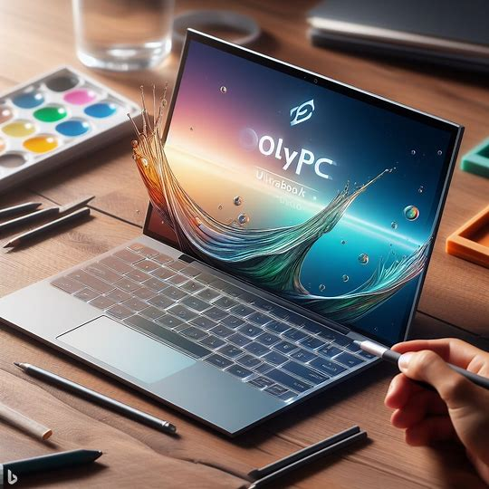

Gran Apertura de Nuestra Nueva Tienda

OlyPC tecnology se complace en anunciar la tan esperada gran apertura de nuestra nueva tienda en el corazón de la ciudad.
El evento tendrá lugar el 16.12.2023 a partir de las 12:00 y promete ser un día lleno de emoción y descubrimientos
tecnológicos.
En esta ocasión especial, los primeros 50 clientes recibirán un obsequio exclusivo de bienvenida,
que incluirá accesorios premium y descuentos adicionales en sus compras. Además, todos los visitantes
podrán participar en sorteos emocionantes con la oportunidad de llevarse a casa productos destacados de OlyPC.
La nueva tienda contará con áreas de demostración donde podrás probar nuestros últimos modelos de
portátiles y computadoras de escritorio. Expertos en tecnología estarán disponibles para ofrecer
demostraciones en vivo y responder a tus preguntas sobre los productos más recientes en el mercado.
Para hacer de este evento una experiencia inolvidable, hemos organizado actividades interactivas y
sesiones informativas sobre las últimas tendencias en tecnología. Descubre cómo la inteligencia artificial,
la realidad aumentada y otras innovaciones están dando forma al futuro de la informática.
La gran apertura también será el momento perfecto para presentar nuestra colaboración exclusiva con
[SAMSUNG]. Podrás conocer de cerca los productos de esta reconocida marca y
disfrutar de ofertas especiales disponibles solo durante el evento.
Estamos comprometidos a proporcionar a nuestra comunidad tecnológica un espacio donde puedan conectarse,
aprender y explorar las infinitas posibilidades que ofrece el mundo de la informática.
¡Esperamos verte en la gran apertura de OlyPC!
Descubre la Revolución: Presentamos la OlyPC UltraBook Pro

Es un placer para nosotros presentar el último logro en tecnología portátil: la OlyPC UltraBook Pro.
Este portátil ultraligero redefine los estándares de rendimiento, diseño y portabilidad, ofreciendo
una experiencia informática sin igual.
Diseñado meticulosamente para aquellos que buscan la combinación perfecta entre estilo y funcionalidad,
la UltraBook Pro presenta un cuerpo elegante de aluminio y una pantalla de borde a borde que te
sumergirá en colores vibrantes y detalles nítidos.
Lo que hace que la UltraBook Pro destaque entre la multitud son sus características innovadoras.
Equipada con un procesador de última generación y almacenamiento SSD ultrarrápido, experimentarás
un rendimiento fluido y tiempos de carga instantáneos.
La duración de la batería de larga duración garantiza que puedas trabajar y jugar durante horas
sin preocuparte por la recarga. Además, la UltraBook Pro cuenta con tecnología de carga rápida,
lo que significa que estarás listo para la acción en minutos.
Con un teclado retroiluminado ergonómico y un panel táctil preciso, trabajar y navegar nunca ha sido tan
cómodo. Además, la UltraBook Pro incorpora las últimas conexiones, incluyendo puertos USB-C y HDMI,
para una conectividad versátil.
Descubre una nueva era en informática portátil con la OlyPC UltraBook Pro. Ya sea que seas un profesional
creativo, un estudiante en movimiento o simplemente un entusiasta de la tecnología, esta UltraBook
está diseñada para llevar tu experiencia informática al siguiente nivel.
Visita nuestra tienda hoy mismo y experimenta la revolución con la OlyPC UltraBook Pro.
¡No te conformes con menos, el futuro de la informática está aquí!
Aprovecha Nuestras Ofertas Especiales: Descuentos Imperdibles en Tecnología

¡Es el momento perfecto para actualizar tus dispositivos y aprovechar al máximo la tecnología de
vanguardia! En OlyPC, estamos emocionados de ofrecerte ofertas especiales por tiempo limitado en una
amplia gama de productos.
Desde potentes portátiles hasta accesorios esenciales, nuestras ofertas te brindan la oportunidad de
ahorrar como nunca antes. Imagina tener lo último en tecnología a precios increíblemente bajos.
¡No querrás perderte esta oportunidad única!
Descubre descuentos exclusivos en laptops, computadoras de escritorio, periféricos y mucho más.
Estamos comprometidos a hacer que la tecnología de alta calidad sea accesible para todos.
Ya sea que estés trabajando desde casa, estudiando o disfrutando del entretenimiento digital,
encontrarás algo para satisfacer todas tus necesidades.
Nuestra oferta por tiempo limitado es una celebración de la innovación y el rendimiento.
Seleccionamos cuidadosamente productos populares y los hemos marcado a precios que te harán sonreír.
Pero actúa rápido, ¡porque estas ofertas no durarán para siempre!
Visita nuestra tienda en línea o acércate a nuestro local para explorar las ofertas.
Nuestro amable personal estará encantado de ayudarte a encontrar los mejores productos que se adapten
a tus necesidades y presupuesto.
¡No te pierdas la oportunidad de ahorrar en tus compras de tecnología! En OlyPC,
estamos comprometidos a hacer que cada compra sea una experiencia emocionante y accesible para todos.
¡Descubre el poder de la tecnología con nuestras ofertas especiales!